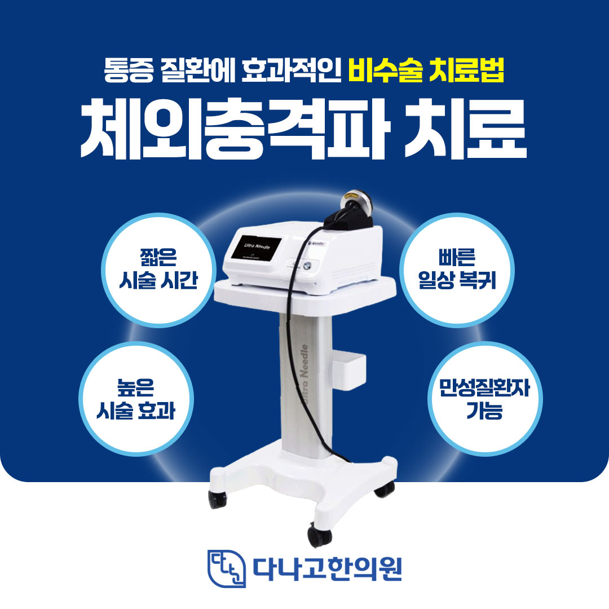
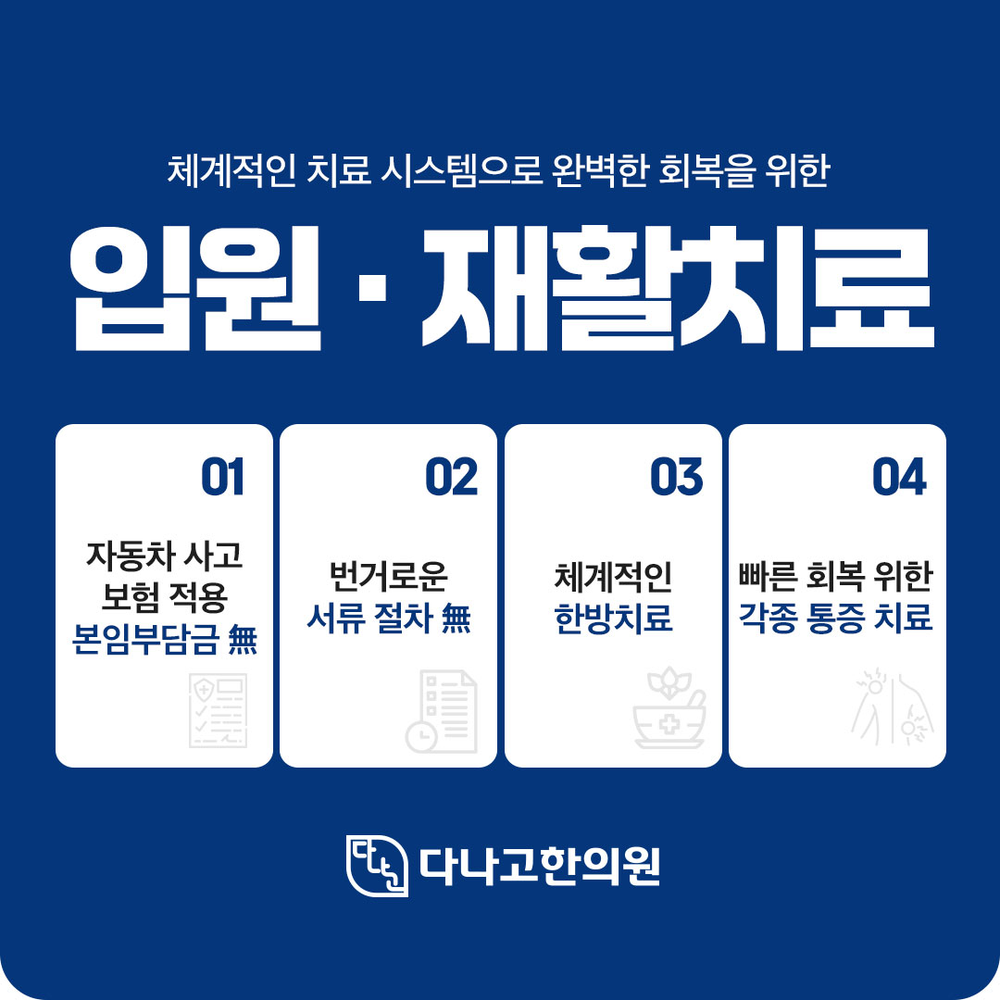
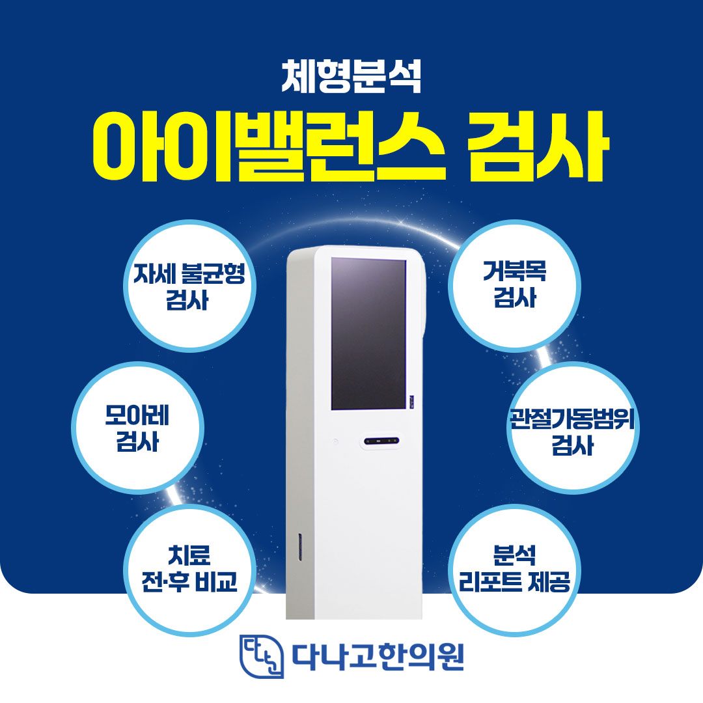
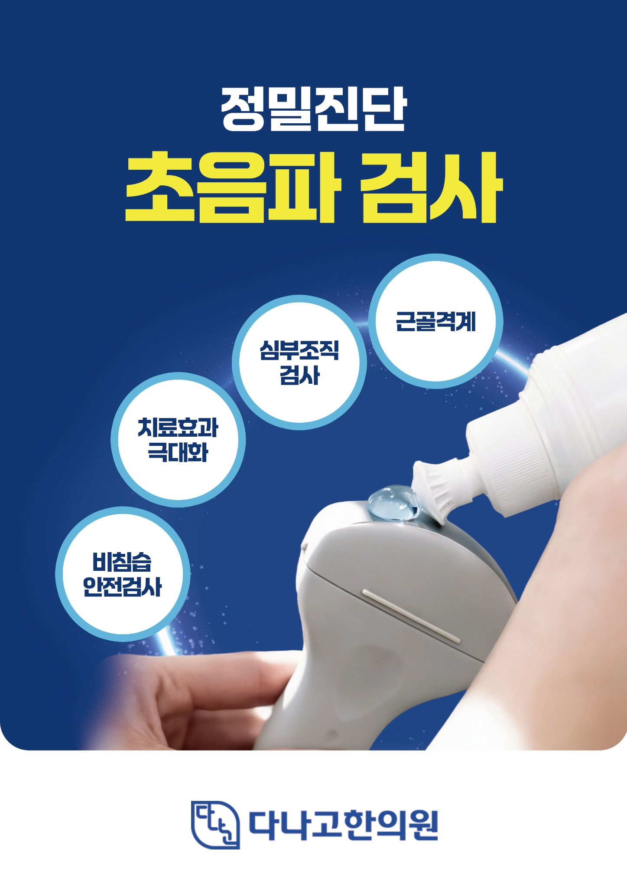
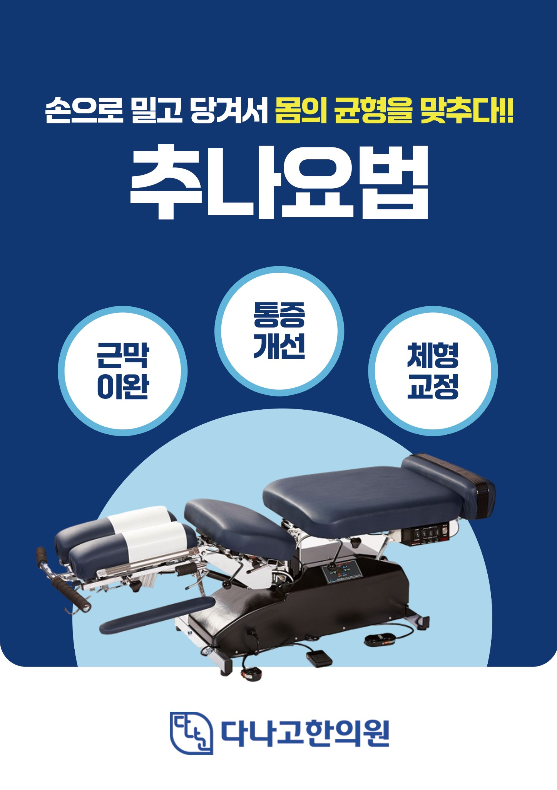
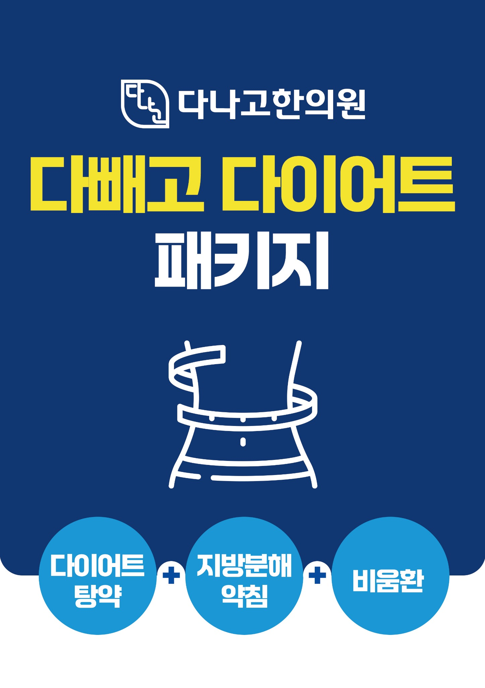
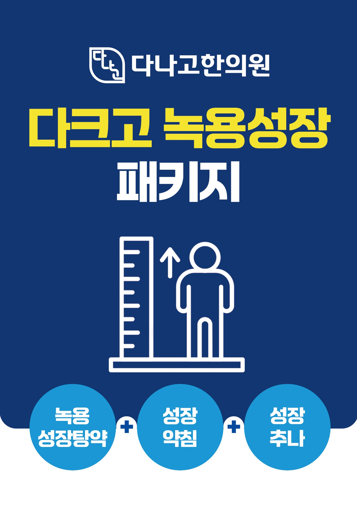

STEP 01
상태 확인
불편한 부위와 증상, 일상에서 느끼는 변화를 함께 확인합니다.
불편한 증상은 사람마다 다르게 나타납니다. 다나고한의원은 증상과 몸 상태를 살펴 진료 방향을 안내합니다. 구체적인 치료 계획은 의료진 상담을 통해 확인해 주세요.
불편한 부위와 증상, 일상에서 느끼는 변화를 함께 확인합니다.
확인한 상태를 바탕으로 가능한 진료와 관리 방향을 설명합니다.
치료 후 변화와 불편감을 살펴 필요한 조정을 상담합니다.
궁금한 진료 분야를 선택하고 상담 및 예약 정보를 확인해 보세요.


검사 및 치료의 시행 여부는 진료 시 증상과 상태를 확인한 뒤 결정합니다.

자세 불균형과 체형 상태를 살펴 상담에 참고합니다. 검사 결과는 의료진의 진찰과 함께 해석합니다.

필요한 경우 근육·힘줄 등 연부조직 상태를 확인하는 데 초음파를 활용합니다.
통증 부위와 상태에 따라 체외충격파 치료의 적합성을 상담합니다. 치료 반응은 개인마다 다를 수 있습니다.

관절 움직임과 근육·근막의 긴장 상태를 고려해 수기 치료를 상담합니다.
진료 내용과 비용, 적용 여부는 의료진 상담 및 개별 상태에 따라 달라질 수 있습니다.
사고 이후 목·허리·관절의 통증과 움직임의 불편감을 확인하고 자동차보험 진료 관련 절차를 안내합니다. 보험 적용 범위는 사고·보험 조건에 따라 확인이 필요합니다.
입원 진료가 필요한 경우 환자의 상태와 입원 가능 여부를 확인하고 진료 계획을 상담합니다. 병실과 입원 가능 일정은 사전에 문의해 주세요.

체중 변화, 식사·수면·활동 습관을 종합적으로 살펴 한약 등 개별 관리 방향을 상담합니다. 안내 이미지의 패키지 구성과 비용은 확인이 필요합니다.

성장 상태와 생활습관을 확인하고 성장 관련 상담을 진행합니다. 한약 및 관련 관리의 필요 여부는 개별 평가를 통해 결정합니다.
제공해 주신 진료 스케줄 기준이며, 휴진·대진 및 공휴일 일정은 변경될 수 있습니다.
| 의료진 | 월 | 화 | 수 | 목 | 금 | 토 | 일 |
|---|---|---|---|---|---|---|---|
| 김진규 대표원장 | ● | — | ● | — | ● | ● | — |
| 방재호 진료원장 | — | ● | ● | ● | — | — | ● |
| 김지수 진료원장 | ● | — | — | ● | ● | — | ● |
| 장혜민 진료원장 | — | ● | — | — | — | ● | — |
● 진료 요일 · 진료 시간은 전화로 확인해 주세요. 제공된 스케줄 안내 이미지 기준입니다.
네 분의 의료진을 소개합니다.
진료원장
진료원장
대표원장
진료원장
OUR APPROACH
증상과 치료 과정에 대해 궁금한 점은 진료 시 의료진에게 편하게 문의해 주세요.
방문 전 네이버 플레이스에서 최신 공지와 예약 가능 여부를 확인해 주세요.
진료시간은 변경될 수 있습니다. 방문 당일 네이버 플레이스 또는 전화로 확인해 주세요.
최신 진료 정보 확인 ↗진료 및 예약 관련 최신 정보는 네이버 플레이스에서 확인하실 수 있습니다.